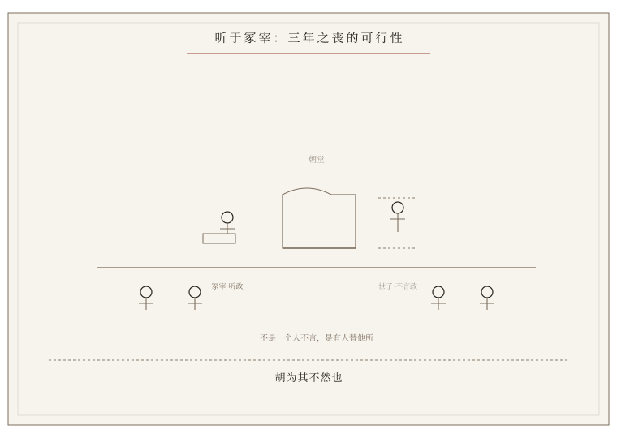

檀弓下 · 四·四十七 · 第 372 课
子张问曰：「《书》云：『高宗三年不言，言乃讙。』有诸？」仲尼曰：「胡为其不然也？古者天子崩，王世子听于冢宰三年。」
说什么事：子张问：书上说，殷高宗守丧三年不说话，一说起话来便使人欢喜——真有这事吗？孔子说：怎么会没有呢？古时天子崩，王世子听命于冢宰，三年不问政。
落在哪一层：以「信」量礼。论一条极难行的礼，古人如何使它行得下去。
为何编在此位：上节论一人之哀，此节论一国之丧。由一身推到天下。
【经】子張問曰：「《書》云：『高宗三年不言，言乃讙。』有諸？」仲尼曰：「胡為其不然也？古者天子崩，王世子聽於冢宰三年。」
【注】時人君無行三年之喪，禮者問有此與？怪之也。讙，喜說也。言乃喜說，則民臣望其言久。／冢宰，天官卿，貳王事者，三年之喪，使之聽朝。
【疏】此一节论世子遭丧冢宰听政之事。「言乃讙」者，《尚书·无逸》云「言乃雍」，雍、讙字相近，义得两通，故郑随而解之。
高宗 殷高宗武丁。
三年不言 居丧三年不发言论政事。不言者，不言政，非不作声。
言乃讙 一开口说话，众人欢喜。讙，注「喜说」。
有诸 有这事吗。
胡为其不然 怎么会不是这样。
王世子 天子之嗣子。
听于冢宰 听命于冢宰。冢宰，天官卿。
贰王事 副贰王事，即代王理事。
子张问：「《书》上说：『高宗守丧三年不说话，一开口便使人欢喜。』真有这事吗？」孔子说：「怎么会没有呢？古时天子崩，王世子听命于冢宰，三年不问政事。」
此章一疑一解。所疑者，三年不言是否可能；所解者，不是他一人不言，是有一个冢宰在。
礼之难行者，常不是「人做不到」，是「无人替他做」。
第一层 子张之疑，正是时人之疑 注云「时人君无行三年之丧，故礼者问有此与？怪之也」。
子张所问，不是学问，是时势：当世之君皆不行三年之丧，故连「古时是否行过」都成了疑问。
一个人所处的时代，会决定他能相信什么。
第二层 孔子之答，答在「制度」 孔子不辩其心，只言其制：天子崩，王世子听于冢宰三年。
三年不言之所以可行，因有冢宰代其听朝。这不是一个人的操守，是一个位置的分工。
礼之可行，靠的不是圣人，是「有人替」。
第三层 不言，非不作声 三年不言，所不言者是政令，非一切言语。
若三年一言不发，则丧礼自身的告、拜、辞、祝皆废。故其义为「不亲政」。
读古书最难的一步，是把「不言」读成「不言政」。 一字之宽严，礼之全体随之。
第四层 言乃讙：众人的「望」 注云「言乃喜说，则民臣望其言久」。
此句极有情：众人之所以欢喜，是因为等了太久。
故「讙」不是称颂其言之善，是庆幸其终于开口。 沉默之久，使一句话变成了恩。
第五层 「雍」与「讙」：两读并存 疏引《尚书·无逸》作「言乃雍」，谓「雍、讙字相近，义得两通」。
郑不改字，两存其说。此是注家之慎：遇到不可定者，不强定。
与今日何干 今之组织，一把手久病、久丧、久缺，多有「硬撑」与「速换」两路。
此章给第三条：设一个代守其位的人，使本人可以真退三年，而事不废。
礼之慈，不在劝人忍耐，在替人安排好「你不在时谁来」。
| 左 | 右 |
|---|---|
| 高宗 | 殷武丁 |
| 三年不言 | 不言政，非不作声 |
| 言乃讙 | 众人欢喜其开口 |
| 雍 | 《尚书》本字 |
| 王世子 | 天子嗣子 |
| 冢宰 | 天官卿，贰王事 |
| 听于冢宰 | 代听朝政 |
| 望其言久 | 沉默使一言成恩 |
| 胡为不然 | 怎么会没有 |
画一座朝堂的正面，视点平视。堂上正中设一空位，位上覆一块素布；空位之左，画一人形端坐，面前置一卷简，作执事之状；空位之右，另画一人形侧立，双手垂在身前。堂下两侧各画三两小人形，仰面望向堂上。不画文字。赭色只用在空位上那块素布的一角。
